Navigace |
Naše první výstavaNe, ještě mi (snad) neměkne mozek a nepoužívám "páníčkovský plurál", tj.mluvení o psovi v množném čísle první osoby. Psí výstavu jsme ovšem absolvovali jako premiéru všichni, tak proto ten plurál:-) A mj. tak přibyla i stránka s výsledky výstav. 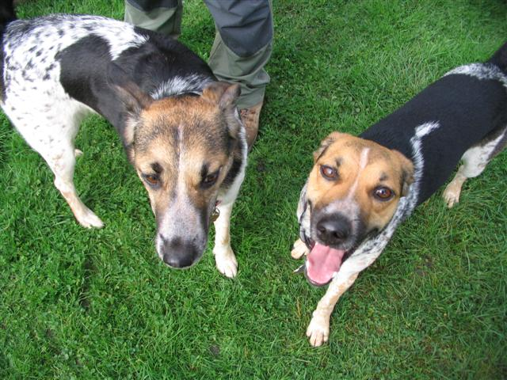 Bela a Nela Na první výstavu jsme vyráželi do brzkého a hodně deštivého rána, takže čertsvě vypraný a kondicionérem ošetřený strakatý kožíšek doznal změn blížícím se stavu zmoklé slepice. Nejdřív jsme mohutně fandili Hance s Jagou, která všem ukázala, zač je toho postoj, a vyhrála třídu mladých s oceněním výborná a CAJC. Jaga stála dokonale a prostě už na to má i oficiální potvrzení, jak moc je krásná, což my už dávno víme :-) . 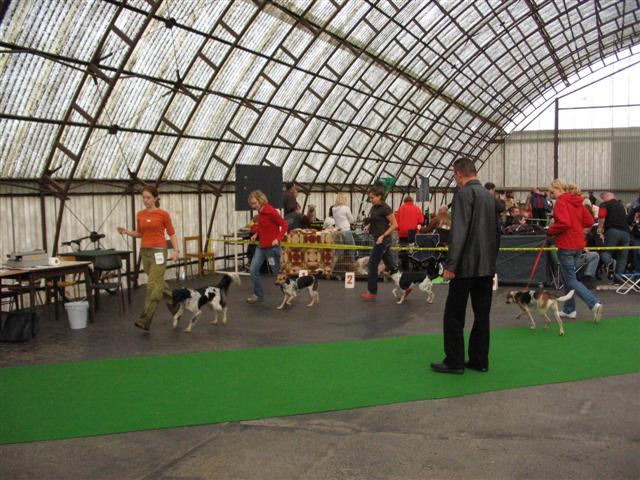 Zleva Bára Kyjský hrádek, Nela (Dafné Velký dar), Fidla z Česlova a Ida Libachar My jsme se s Nelou prezentovaly ve otevřené třídě, zatímco Rudolf držel palce a fotil.Klus i zuby ukázat (já ne, jen Nela), jsme zvládly moc pěkně, ale kámen úrazu nastal při předvádění v postoji před rozhodčím. Prostě nám to moc nešlo. Nela si prostě stoupnout nechtěla a neustále si sedala, takže to bylo takové nezvhledné ruka noha. Pan rozhodčí byl docela hodný a nechal nás to zkoušet docela dlouho, ale samostatný postoj Nela utvořila na pikosekundy. 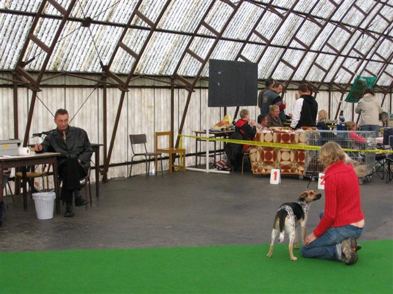 Krátká chvilka Nelina postoje, moc šťastně se ale zrovna netváří. Skončily jsme tedy třetí ze čtyř (ještě že ne čtvrté ze tří:-) ) s hodnocením velmi dobrá třetí. Nicméně radost nám udělal docela pěkný posudek - jako že Nela správně chodí, skus má nůžkový a podobně. Prostě takové ty charakteristiky, které jako majitel nemůžu objektivně zhodnotit, protože ze subjektivního pohledu se opravdu pohybuje velmi dobře (když vyskočí až na linku a k hnusárnám doběhne o hodně dřív než já:-) ) ajejí zuby můžu obdivovat téměř nonstop, neboť se na nás pořád směje a zubí dokonce i ve spánku. Káždopádně plánujeme absolvovat ještě nějakou další výstavu a víc trénovat postoj v nějakém rušném prostředí (asi budeme chodit na Hlavák). 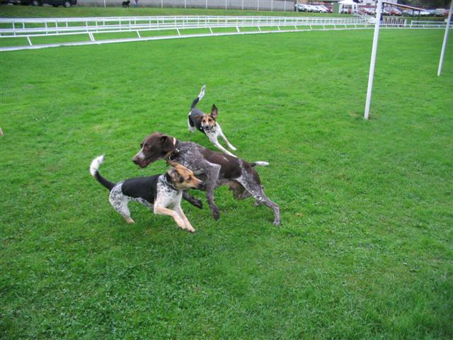 Nela, Boro (nemecký ohař), Jaga. Naše očekávání spjatá s absolvováním výstavy však obnášela mnohem víc, než nějaké to oficiální hodnocení, hlavně jsme se těšili na strakatou melu, že se zase sejde víc strákáčů s páníčky, což se povedlo, i když v dešti a větru jsme rozhodně neměli takovou výdrž, jako kdyby bylo hezky. 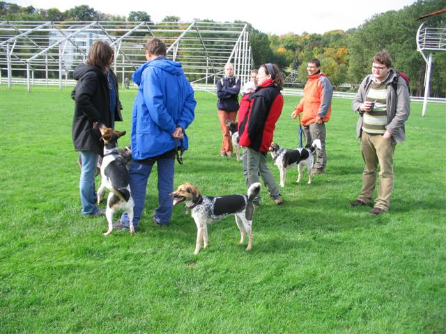 Na strakatý sraz svítí slunce. 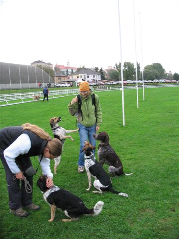 V popředí Katka s Britou a vzadu performuju svoje charisma (piškotové) před Nelou, Jagou a Borem. 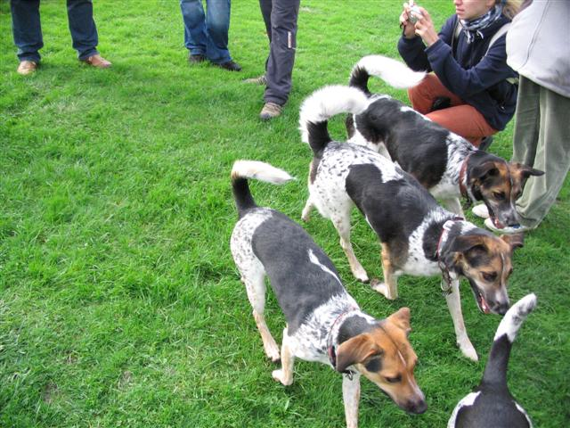 Made in Velký Dar. Odpředu dozadu Nela, Bela, Alf , podoba se nezapře. 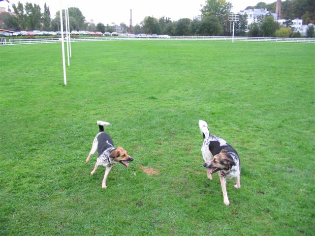 Hrátky s (tetou) Belou 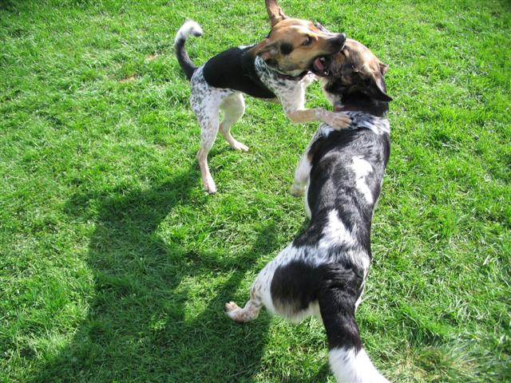 S (strejdou) Alfem. 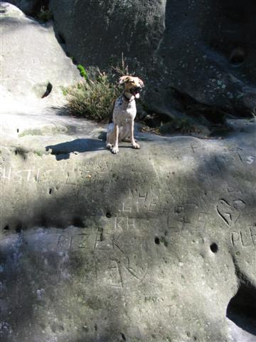 Další část víkendu jsme strávili poblíž Boleslavi, takže jsme si udělali výlet na Valdštejn a Hrubou skálu, což se Nele moc líbilo. Ukázalo se, jakou výhodou je mít čtyřinohy, protože my jsme se jen se dvěma zdaleka nevyšplhali tak vysoko jako Nela.Asi přece jen mápud sebezáchovy, protože nikde nezahučela do propastí, ačkoli občas žertovně běžela hodně blízko, abychom si taky užili trochu adrenalinu. 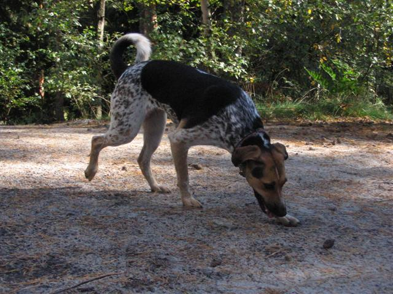 Zátiší Nely na pískovcovém písku a jehličí.
|